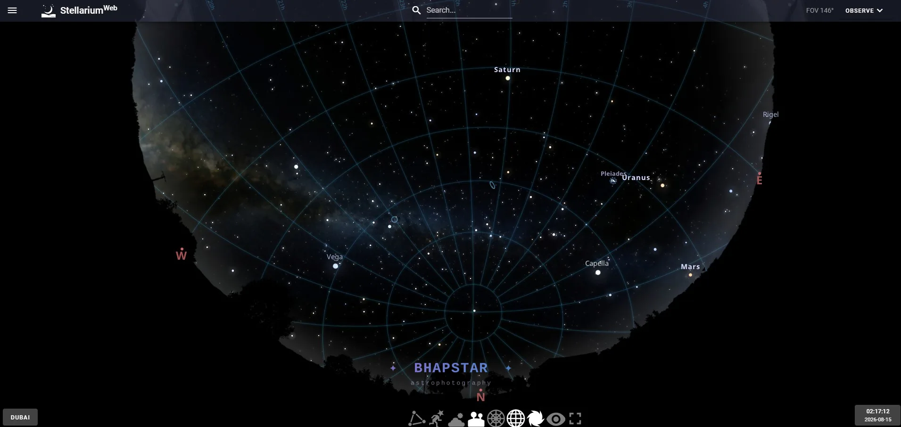

How I Plan Every Astrophotography Session Using Stellarium
If there is one piece of software that I open before every astrophotography session, it isn't SirilA free, open source program for turning a folder of raw frames into a finished astrophotograph. It does the stacking and most of the processing., PixInsight or even ASIAIR – it's Stellarium. Long before I set up my telescope or polar alignLining a mount's main axis up with the point the sky turns around. Get it right and one slow, steady turn follows the stars all night. my mount, I'm already planning the entire evening from the comfort of my desk. Whether I'm imaging from my balcony in Dubai or heading out to the dark skies of Al Quaa, Stellarium has become the centre of my planning workflow.
Best for: Planning astrophotography sessions, exploring the night sky, framing deep skyAnything beyond our own solar system: nebulae, galaxies and star clusters. Faint, far away, and the reason for long exposures. objects and learning the constellations.
Cost: Stellarium Web is completely free. The desktop version is paid but offers advanced astrophotography features that I personally consider well worth the investment.
What is Stellarium?
Stellarium is a planetarium application that accurately recreates the night sky from almost anywhere on Earth. Simply enter your location, choose a date and time, and you'll see exactly what will be visible above you.
Unlike a basic star chart, Stellarium lets you fast-forward through time, explore different seasons, identify stars and constellations, locate planets and browse thousands of deep sky objects. It isn't just useful for astrophotographers either—it's equally enjoyable if you simply want to learn the night sky.

Start with the Free Version
If you've never used Stellarium before, I'd recommend beginning with Stellarium Web. There's nothing to install, it's completely free, and within minutes you'll be exploring the sky from your own location.
I still regularly use the web version when I'm away from my own computer or simply want to quickly check where a particular object will be later in the evening.
For beginners, it's probably the easiest way to answer questions like:
- What's visible tonight?
- When does Orion rise?
- Where will Saturn be?
- What constellations are visible this month?
- When will astronomical darkness begin?
Even after years of astrophotography, I still find myself opening Stellarium Web for quick planning.
Planning Before Setting Up
One of the biggest mistakes beginners make is setting up their equipment before deciding what they're actually going to photograph.
Instead, I always start with Stellarium.
Within just a few minutes I know:
- Which deep sky objects are visible tonight.
- How high they'll rise above the horizon.
- When they'll culminate.
- Whether the Moon will interfere.
- How much imaging time I'll realistically have.
This simple planning process has saved me countless hours and stopped me wasting perfectly clear nights on poorly positioned targets.
Why I Bought the Desktop Version
While the free version is excellent, I eventually purchased the desktop edition because of one feature that completely transformed how I plan my astrophotography.
Field of View Simulation
This feature allows you to create virtual versions of your own astrophotography equipment.
Instead of guessing whether a target will fit inside your camera sensor, Stellarium shows you exactly how your final image will be framed.
It's incredibly accurate and has become one of the most useful planning tools I own.

Building My Equipment Library
One of the first things I did was create equipment profiles for every imaging setup I regularly use.
This means I can switch between telescopes and cameras with a single click and instantly see how each one frames the same target.
My Stellarium equipment library currently includes:
- Askar V with all six optical configurations
- ZWO ASI585MC Air
- Seestar S30
- Seestar S50
- Sony A7III with my Samyang 14mm lens
- Sony A7III with my Samyang 135mm lens
Once you've built these profiles, Stellarium becomes incredibly powerful.
I can simply select a target like the Rosette Nebula or Veil Nebula and immediately compare how it looks through every telescope I own.
Choosing the Right Telescope
Not every target suits every telescope.
Some nebulae are enormous and need a shorter focal lengthHow much a lens or telescope magnifies, measured in millimetres. A small number gives a wide view of the sky, a large number a narrow, closer one.. Others are relatively small and benefit from a much longer focal length.
Rather than finding out after I've finished setting everything up, Stellarium tells me before I've even packed the car.
For example, one evening I may decide to image the Crescent Nebula.
Using the Field of View tool I can instantly compare how it looks with:
- My 270mm Askar V configuration.
- 384mm with reducerAn extra lens that shortens the focal length, giving a wider view and gathering light faster. The picture covers more sky and needs less time..
- 500mm.
- 600mm.
- The Seestar S50.
- The Sony A7III with a wide-angle lens.
Within seconds I know which setup will produce the composition I'm looking for.

It's More Than Just Framing
Field of View simulation is only one part of why I use Stellarium.
Every imaging session also starts by checking:
- Moon phase and position.
- Object altitude.
- Transit time.
- Astronomical darkness.
- Seasonal visibility.
- Potential conjunctions.
Being able to fast-forward through the night means I can identify the best imaging window in just a few minutes.
Planning from Dubai
Living in Dubai brings its own challenges.
Some targets spend very little time high enough above the horizon to image effectively, while others may only have a short imaging window before disappearing behind nearby buildings.
Stellarium allows me to work all of this out in advance.
If I'm heading to darker skies such as Al Quaa, I can plan an entire night's imaging before I even leave home.
Learning the Sky
One thing I particularly like about Stellarium is that it doesn't just help me take better photographs—it has genuinely helped me understand the night sky.
Instead of simply searching online for imaging targets, I've gradually learnt where constellations appear throughout the year and how the sky changes from season to season.
That knowledge makes planning future sessions much easier.
Is the Paid Version Worth It?
For casual stargazing, the free version is fantastic and I would recommend it to absolutely anyone.
If you're serious about astrophotography though, I think the desktop version is one of the best software purchases you can make.
The Field of View tools alone have saved me countless hours by helping me choose the right telescope and camera combination before I even begin setting up.
Spend half an hour creating accurate equipment profiles for every telescope and camera you own. It's a little time-consuming initially, but once they're created you'll use them for every imaging session thereafter.
Final Thoughts
Every successful astrophotography session starts with good planning.
Before I even think about polar alignment, guidingA second small camera watches one star and sends tiny corrections to the mount, keeping the target locked in place over long exposures. or camera settings, I already know exactly what I'm going to photograph, how it will fit inside my camera sensor, when it reaches its highest point and how long I'll have to capture it.
That's all thanks to Stellarium.
Whether you're completely new to astrophotography or have been imaging for years, I genuinely believe Stellarium is one of the most valuable pieces of software you can have in your toolkit.
Start with the free version, spend some time exploring the night sky, and if you eventually decide to take astrophotography more seriously, the desktop version's planning and Field of View tools may become just as indispensable as they have for me.